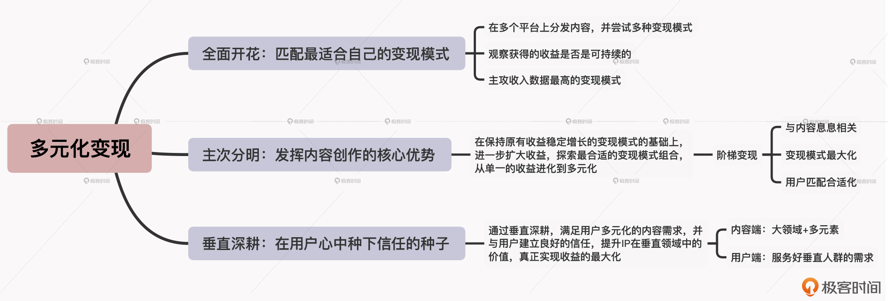

- 00 开篇词 短视频时代下，怎么把握好变现风口？.md
- 01 爆款短视频的底层逻辑：用心拍的短视频为啥没人看？.md
- 02 爆款短视频的底层逻辑：如何轻松打造自我特色？.md
- 03 精益创业法：如何快速跨过从0到1这道坎？.md
- 04 SWOT法：这么明显的个人优势你为啥就是看不到？.md
- 05 效用函数法：如何用量化的方式进行高效创作？.md
- 06 二次创新实验法：如何打造个人的差异化定位？.md
- 07 平台定位：如何选择最适合自己的创作平台？.md
- 08 如何快速找到各大短视频平台的正确切入点？.md
- 09 选题（上）：如何利用思考清单找到合适选题？.md
- 10 选题（下）：如何为不同的内容定制合适选题？.md
- 11 优劣分析法：如何快速筛选适合创作的视频素材？.md
- 12 标题（上）：如何利用微创新巧妙找到爆款标题？.md
- 13 标题（下）：如何用对号入座的方式抓住标题亮点？.md
- 14 视频封面（上）：如何快速抓住用户注意力？.md
- 15 视频封面（下）：如何传递最有价值的信息？.md
- 16 视频剪辑：如何轻松掌握视频化剪辑的三大公式？.md
- 17 效果反馈法：剪辑很容易，为什么你却一直学不会？.md
- 18 剪辑对比（上）：如何避开常见的短视频剪辑陷阱？.md
- 19 剪辑对比（下）：如何利用剪辑技巧提升视频质量？.md
- 20 拉片法：用电影创作的方式学习爆款短视频运营技巧.md
- 21 用户留存率：为什么粉丝很多但忠实拥趸却很少？.md
- 22 点赞率（上）：如何有效提升短视频的点赞量？.md
- 23 点赞率（下）：三种方法轻松提升用户对内容的认可度.md
- 24 上瘾机制：为什么视频观看量很高却没人留言？.md
- 25 避坑指南：为什么很多短视频账号中途做不下去了？.md
- 26 如何找到适合自己的短视频变现模式？.md
- 27 多元化变现：如何明确不同创作阶段的变现任务？.md
- 28 多内容变现：不同内容的主打变现模式是什么？.md
- 结束语 一切成大事者，都是终身学习者.md
27 多元化变现：如何明确不同创作阶段的变现任务？
你好，我是周维。
通过上节课的学习，我们现在已经了解了短视频+变现模式的特点，知道如何根据自己的内容定位和个人优势选择合适的变现模式。可是这里仍然存在一个现实的问题：即使了解了不同变现模式的特点，最终获得的收益还是没有别人多，这是为什么呢？
其实是因为你不清楚自己当前所在创作阶段的主要变现任务是什么。
这个道理跟短视频运营一样，我们在不同的创作阶段所面临的变现任务都是不一样的。很多创作者会开通很多的变现功能，比如平台小店、直播、橱窗广告等，却无法获得最大的商业回报，就是因为没有抓住自己现阶段最核心的变现任务，而是单纯为了变现而变现，陷入到了短视频平台商业模式的陷阱之中，成为了平台发展的“陪跑人”。
所以今天这节课，我就来给你分享下在不同的内容创作阶段，创作者要遵循的主要变现原则，分别是全面开花、主次分明和垂直深耕，以此帮助你明确自己在现阶段的核心变现任务，进而能够在实际的变现过程中获得持续的、最大化的收益和回报。
全面开花：匹配最适合自己的变现模式
我们先来看看第一个变现原则：全面开花。
这里你可能会感觉有点儿奇怪：前面不是说，有的创作者开通了很多变现功能，最后也没获得很多收益吗？那实现全面开花的目的又是什么呢？
其实我并不是这个意思。所谓的全面开花是指在短视频创作的早期阶段，由于内容创作模式还未固定，个人定位也正在摸索之中，所以在变现上我们也需要多加尝试，这样才能找准最适合自己的变现模式，更好地减少运营投入的成本，走上变现的正轨。
那么具体要怎么做呢？我认为主要有三个步骤。
1. 在多个平台上分发内容，并尝试多种变现模式。
各大短视频平台的推荐机制和用户喜好都不一样，同样的创作内容分发到不同的平台上，获得的内容数据反馈也是不一样的。变现模式同理，我们可以通过多平台分发和变现，通过数据反馈来甄别适合自己的变现模式。
2. 观察获得的收益是否是可持续的。
在经过第一步多样化的变现尝试之后，我们可能会同时运营几个平台的账号，这样在一段时间内我们可以观察下每个平台上获得的变现收益。
一个是看看哪个平台的收益最高。刚开始创作时在每个平台上获得的收益都是不同的，我们可以先找到能给自己带来最大收益的平台，一方面可以节省投入成本，另一方面也说明这个平台上的用户会更加认可我们的内容。
另一个是要看该收入数据的增长是否稳定。收入数据的增长稳定也是很重要的衡量指标，我们可以在一段固定的时间内，比如月度或季度等，查看自己某个平台账号的收益是否稳定。
如果账号符合以上两个标准，就表明该平台和采用的变现模式比较适合你，要守住不能丢；反之如果创作了一段时间，收入数据总是大起大落，那就说明这个变现模式不太适合你，可以先放弃。
3. 主攻收入数据最高的变现模式。
在不断尝试的过程中，我们会找到收入数据最稳定，且一直呈现向上增长趋势的变现模式。这就表明采用这种变现模式，认可我们创作内容的付费用户会更多一些，可以作为接下来重点主攻的变现方向。
我给你举个例子。李四是一名美食类内容创作者，内容上主要是分享一些简单实用好上手的快手菜烹饪技巧。在创作初期，他探索的创作模式是将同样的内容剪辑成竖屏与横屏两种不同的形式。竖屏以时间短、内容精炼为核心，在抖音、快手、视频号上分发；横屏以时间长、内容丰富为卖点，会分发到B站、西瓜视频、好看视频等平台上。
这样通过多平台全面开花的变现模式探索，他最终匹配的主要变现模式就是以横屏短视频内容带来的流量变现，就此赚到了第一桶金。
总而言之，在短视频创作的初期，通过多平台、多变现模式的尝试，基本能够寻找到适合自己的变现模式，同时也可以减少自己前期各方面的支出成本。
主次分明：发挥内容创作的核心优势
在经过全面开花的前期创作阶段后，现在我们就进入到了一个比较稳定的创作时期。不过我认识很多的内容创作者，由于前期全面开花的原因，到这个阶段就很难能厘清自己现有的变现模式，往往是捡了芝麻、丢了西瓜，看似在各种变现模式中都有收益，但是无法做到收入最大化，只能是原地踏步。
所以，在这一阶段最重要的变现任务就是做到主次分明，充分发挥内容创作上的核心优势，在保持原有收益稳定增长的变现模式的基础上，进一步扩大收益，探索最合适的变现模式组合，从单一的收益进化到多元化。
那么要如何才能做到主次分明呢？这里我们继续来分析前面李四的例子，在此过程中明确这一阶段的变现关键点。
李四在进入到创作稳定期后，原来主攻的横屏短视频的流量变现模式，现在已经趋于稳定，所以接下来可以在保持该变现模式的前提下，分出精力来经营分发在抖音、快手、视频号上的竖屏内容账号，在此期间探索合适的变现模式。
那具体要怎么做呢？其实创作者可以采用阶梯变现的方式，也就是像上楼梯一样一步步验证所采用的变现模式是否合适。
在这里，由于竖屏内容的分发平台如抖音、快手、视频号等，直播模式比较成熟，因此李四可以先尝试开启直播带货的变现模式。在进行阶梯变现的验证时，需要注意三点：
- 与内容息息相关。新增加的直播卖货的变现模式要求创作者的人设能够吸引用户，这样才能让用户愿意来观看并购买，所以李四在内容创作中，就需要贴合自己的人设、IP，而不能为了变现而变现。
- 变现模式最大化。在选择尝试新的变现模式时，需要不断地验证该变现模式带来的收益是否稳定和可持续。
- 用户匹配合适化。即创作者的变现模式是用户可以接受的，并且可以带给用户更多价值与服务。
当然，这里我只是用李四举例，在实际的变现过程中，你还需要投入一些时间和精力去验证其他适合自己的变现模式，才能得出结论。
垂直深耕：在用户心中种下信任的种子
到这里，我们就进入到了创作的成熟阶段，内容已经在用户心中具有一定的品牌价值。
不过不少的创作者在这个阶段，或多或少都会面临这样的问题：内容制作水准不差，也有主攻的变现模式，但是获得的收益总是没达到自己的预期；或者，随着平台的发展与调整，涌入了更多的创作者，导致自己的收益开始下滑，不知道该怎么拓展合适的变现模式。
事实上，内容的创作水准不低，也有主攻的变现模式，但收益效果不好的根本原因，是内容不够垂直化，用户观看内容的获得感和价值感低，所以不管采用哪一种变现模式都不会有很好的收益。而由于其他创作者的竞争导致自己的收益下滑，其实是因为没有找准自身内容要服务的垂直人群。
因此在这个阶段，我们需要通过垂直深耕，满足用户多元化的内容需求，并与用户建立良好的信任，让自身的IP成为垂直领域中最有价值的一个，然后才能真正实现收益的最大化。
那么具体要如何实现垂直深耕呢？其实，我们可以从内容端与用户端两方面入手，找到解决答案。
- 内容端
我们知道，在一个大的创作领域中开辟一个新的品类内容，可以通过大领域+多元素的方式进行微创新，体现出内容的核心优势。那么在垂直深耕上，我们也可以进行有针对性、有目标的深度创作。
我举个例子。假设我是从事互联网工作的，准备拍摄Vlog类的短视频内容，为用户提供有价值的知识输出。那么我的创作公式就是：Vlog +科技新品+使用指南+场景演绎，每次按照这样的模式进行创作和拍摄，就会在用户心中形成一个固有的内容品牌，这是我区别其他同类内容最大的地方。
而这就意味着我在内容的细分领域中找到了一席之地，并以此吸引了垂直的用户人群，从而就在特定场景下找到了与用户建立信任的基础。请记住，正因为有了信任，短视频的商业变现才会应运而生。
- 用户端
在短视频领域，真正成功的变现模式都是某个场景下先为一部分用户带来了价值，得到了认可，建立了信任，随后才会吸引更多的同类的用户，进而才能获得更多的收益。
所以，我们在选择变现模式时，重点需要服务好垂直人群的需求。这里我们在前面的课程中讲过很多次了，你可以去回顾复习下。
小结
今天，我给你介绍了在多元化变现时要遵循的三个原则：全面开花、主次分明以及垂直深耕。在我看来，之所以这些原则非常重要，是因为在创作中，我们往往会陷入到“变现模式越多就越有利”的假象中，找寻不到真正适合自己的变现模式，从而走了很多弯路。
所以，你在探索变现模式的过程中，需要根据自己当前的创作阶段，有重点地选择合适的变现模式，并加以应用今天所讲的三种变现原则，从而让自己在创作之路上走得更稳，最重要的是让自己的收益可持续、最大化。

思考题
假设你创作短视频已经有几个月的时间了，通过单一的流量变现模式赚到了一些钱，但和你预想的目标还有些差距，那现在你要如何抉择呢？是继续坚持这种单一的变现模式，还是寻求改变？
欢迎在留言区分享你的答案。如果你觉得有收获，也欢迎把今天的内容分享给更多的朋友。感谢你的阅读，我们下一讲再见。
© 2019 - 2023 Liangliang Lee. Powered by gin and hexo-theme-book.